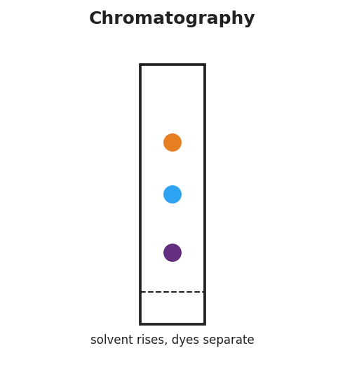
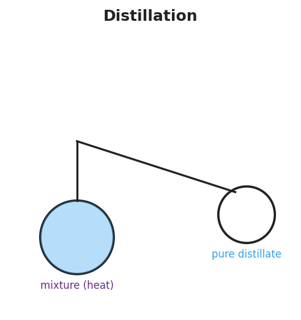

01 Phenomenon
A sailor is stranded on a coast. There is endless ocean water all around — and not a drop is safe to drink, because salt is dissolved throughout it. Your teacher pours salt water through a coffee filter. The water comes out the bottom still salty: the filter caught nothing. The salt is mixed in so evenly and is so small that it slides right through the paper with the water.
02 Driving question
How do we choose the right way to separate a mixture — and how do we get fresh water from seawater?
03 Notice & wonder
| I notice… | I wonder… |
|---|---|
Turn & Talk #1: The coffee filter failed on salt water. But would a coffee filter work if you had sand mixed in the water instead of salt? In one sentence, explain why one would work and the other would not.
04 Initial model
Before your teacher names any methods: for each mixture below, write your best guess for how you would separate it, and what makes the two parts different in a way you could use. You do not need correct vocabulary yet — describe what you would do.
| Mixture | How would you separate it? | What is different about the two parts? |
|---|---|---|
| Sand + water | ||
| Iron filings + sand | ||
| Salt + water (you want the water back) |
05 Investigate
Part 1 — BTC thinking task (at the whiteboards)
Your group will be given mixtures one at a time. For each one, write on your vertical surface: (a) what you would do, and (b) the property difference your idea uses. Record your group’s thinking here as you go.
| # | Mixture | What we would do | Property difference we’re using |
|---|---|---|---|
| 1 | Sand + water | ||
| 2 | Iron filings + sand | ||
| 3 | Salt + water (keep the water) | ||
| 4 | Black marker ink (looks like one color) |
Part 2 — Chromatography mini-lab
Spot a dot of black or brown marker (or candy dye) near the bottom of your paper strip. Stand the strip with its bottom edge in the shallow solvent — keep the dot above the solvent line. Watch the solvent climb.

How many different colors did the single dot separate into? _______________
What does this tell you about whether “black” marker ink is one substance or a mixture?
- Why did the colors end up at different heights on the paper?
Part 3 — Distillation observation
Watch the demonstration (or the Javalab simulation). The salt water boils in the flask; the vapor travels to the cooler collector and condenses there.

- The water collected on the right side is clear and salt-free. Where did the salt go?
- What physical property of water and salt makes this separation possible?
06 Make it make sense
For each mixture, name the best separation method and the property difference it uses. Then explain what would happen if you used the wrong method.
A jar holds pebbles sitting at the bottom of muddy water (the mud particles are large and undissolved).
- Best method: _______________________________________________
- Property difference used: _______________________________________________
- If you tried distillation instead, what would go wrong? _______________________________________________
A beaker holds copper sulfate dissolved in water (a clear blue solution), and you want to recover the solid copper sulfate.
- Best method: _______________________________________________
- Property difference used: _______________________________________________
- Why won’t filtration recover the dissolved copper sulfate? _______________________________________________
A test tube holds a green food-coloring drop, and you suspect it is actually a mixture of blue and yellow dyes.
- Best method: _______________________________________________
- Property difference used: _______________________________________________
- What result would prove it was a mixture? _______________________________________________
07 Key vocabulary
- filtration
- a separation method that passes a mixture through a barrier with tiny holes (filter paper) to trap an undissolved solid while the liquid passes through; it exploits a difference in *particle size* and does not separate dissolved substances
- distillation
- a separation method that boils a mixture so a lower-boiling-point component vaporizes, travels, and condenses in a cooler collector as a purified liquid, while the higher-boiling component is left behind; it exploits a difference in *boiling point* (the principle behind turning seawater into fresh water)
- chromatography
- a separation method in which a solvent moves through a material (such as paper) and carries the components of a mixture at different rates, spreading them apart according to how strongly each one clings to the material versus travels with the solvent
Use each term in a sentence about today’s phenomenon or investigation. Do not just copy the definition — use the word to describe something you observed or did.
filtration: _______________________________________________ _______________________________________________
distillation: _______________________________________________ _______________________________________________
chromatography: _______________________________________________ _______________________________________________
08 Revise your model
Return to your Initial Model. For each mixture, add the correct method name and circle the property difference that makes it work.
Design-a-separation challenge. A beaker contains a mixture of sand, salt, iron filings, and water. List the steps, in order, to recover all of the components separately. For each step, name the method and the property it uses.
| Step | Method | Component recovered | Property difference used |
|---|---|---|---|
| 1 | |||
| 2 | |||
| 3 |
Then finish this Because / But / So sentence:
A magnet can pull iron filings out of the sand-and-iron mixture, because __________________________________________, but __________________________________________, so __________________________________________.
09 Exit ticket
A mixture contains small wood shavings floating in water plus sugar dissolved in that same water.
- Describe a two-step procedure to recover the wood, the sugar, and the water separately. Name the method and the property difference used at each step.
Step 1 — method: _________________ — property used: _______________________________
Step 2 — method: _________________ — property used: _______________________________
- A student says, “Filtration separated the wood from the water, so filtration can also separate the dissolved sugar from the water.” Explain why this is wrong. Use the idea that a tool’s structure must match a real property difference in the mixture.
10 Explore further
- Distillation demonstration (teacher-run): Gently boil salt water in a flask connected to a condenser (or an improvised setup: boiling flask, cool collecting vessel). Collect a few mL of distillate; taste-test is *not* done in a chem lab, but students can observe that the collected water is clear and that a residue of salt is left behind in the boiling flask. Connect each part of the apparatus to the schematic in `figures/distillation_apparatus.png`.
- Paper chromatography of markers / candy dyes: Students spot a dot of washable black (or brown) marker — or the dye rinsed from coated candies — near the bottom of a chromatography/filter-paper strip, dip the bottom edge in water or alcohol, and watch the single dot separate into its component colors as the solvent rises. Compare results to `figures/chromatography_setup.png`. This makes the invisible-mixture idea visible: one "color" is actually several dyes with different affinities for the paper.
- Distillation — Javalab simulation: The Javalab "Distillation" interactive lets students heat a two-component mixture and watch the lower-boiling-point component vaporize, travel, and condense in the collector while the higher-boiling component stays behind — a clean digital model of the demonstration for students who need a second pass or for absent students.